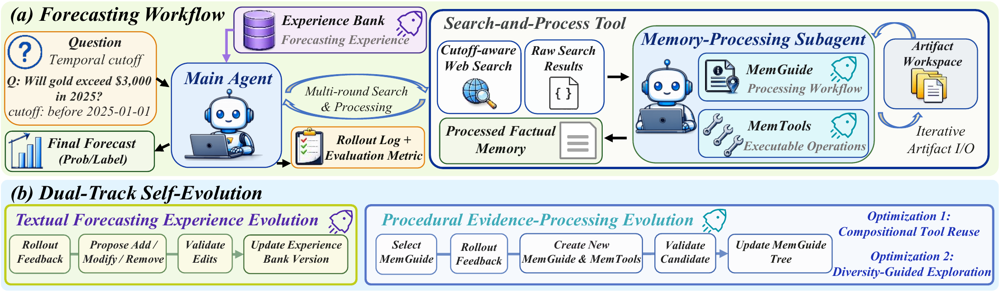
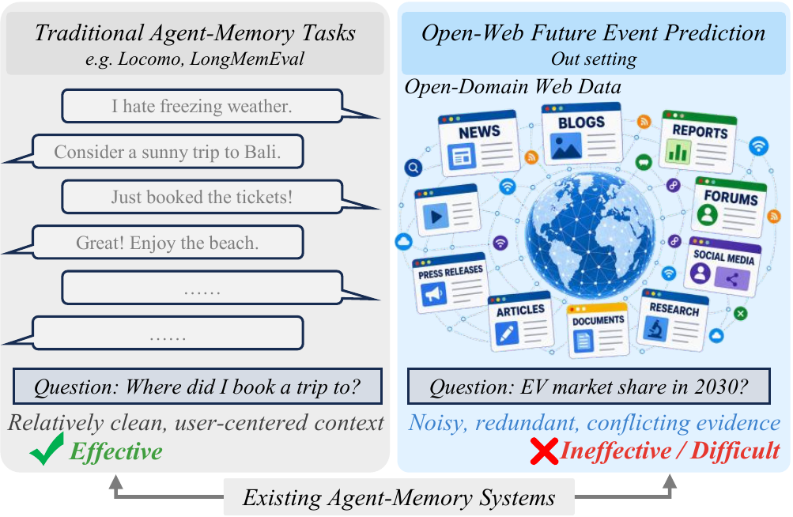
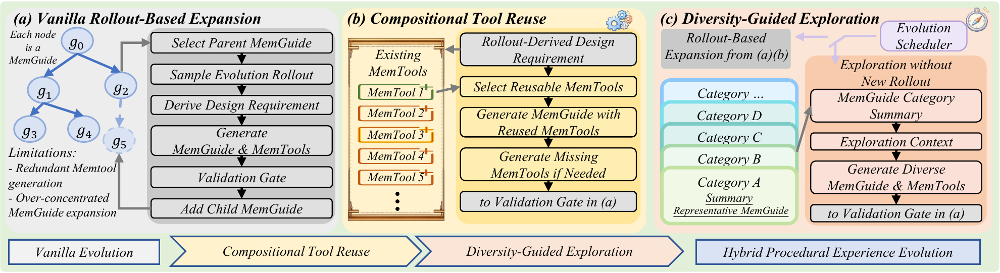
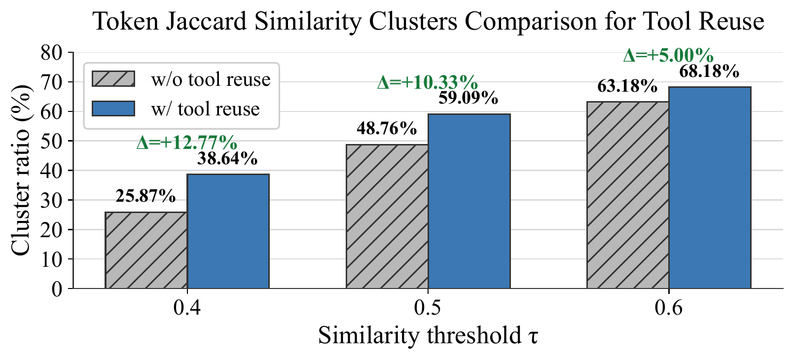
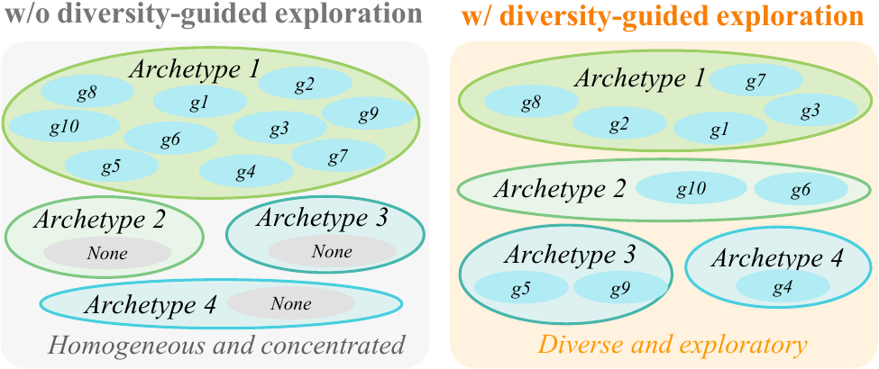

Abstract
Open-web future event prediction requires agents to distill reliable signals from noisy, redundant, and incomplete evidence. Existing retrieval and memory mechanisms either pass retrieved information directly to agents or rely on simple memory functions such as storing and reusing prior information, leaving them insufficient for open-web forecasting. We propose ForeDreamer, a self-evolving dual-agent framework that transforms raw web evidence into structured memory before prediction. ForeDreamer separates factual memory, a question-specific evidence state for the current forecast, from experiential memory, persistent agent experience accumulated across forecasting episodes. A main agent searches for evidence and produces forecasts, while a memory-processing subagent converts search results into factual memory with dedicated tools. ForeDreamer further evolves experiential memory through two tracks, improving both forecasting decisions and factual-memory construction. Experiments on Prophet Arena and FutureX demonstrate its effectiveness.

Motivation
Traditional agent-memory systems are commonly designed to store, retrieve, and reuse relatively clean interaction histories. Open-web forecasting presents a different challenge: useful evidence is sparse, time-sensitive, and scattered across heterogeneous sources, while search results may be outdated, distracting, redundant, or mutually conflicting.
ForeDreamer treats forecasting as an evidence-to-memory transformation problem. Raw results are processed into a coherent, question-specific evidence interface before the forecasting agent reasons over them.

ForeDreamer Framework
Factual Memory
A processed evidence artifact for the current forecast, constructed from temporally valid web observations and scoped to one question.
Experiential Memory
Reusable forecasting and evidence-processing experience that accumulates across episodes and guides future behavior.
Dual-Agent Forecasting Workflow
The main agent consults an Experience Bank, plans multi-round searches, integrates processed factual memory, and produces the final probability or label. For every search result, a memory-processing subagent follows a MemGuide—an explicit evidence processing workflow—and invokes executable MemTools through an artifact workspace. This separation makes evidence processing explicit and inspectable instead of asking the forecasting model to interpret a long prompt of raw results.
Cutoff-Aware Forecasting
Each question is paired with a temporal cutoff. Web search is constrained to information available at prediction time, and all processed evidence is accumulated before the final forecast. The complete rollout—including interactions, artifacts, ground truth, and evaluation metrics—then becomes feedback for self-evolution.
Dual-Track Self-Evolution
Validated add, modify, or remove operations evolve the Experience Bank for search planning, evidence integration, and forecast calibration.
Rollout feedback drives validated updates to a MemGuide tree and its executable MemTools, improving how factual memory is constructed.
Candidate memories and procedures are admitted only when they pass interface checks and improve validation performance on the evolution pool.
Efficient and Diverse Procedural Evolution
Vanilla rollout-based expansion can repeatedly generate near-duplicate tools and over-concentrate on one successful guide family. Compositional Tool Reuse selects compatible existing MemTools and generates only missing operations. Diversity-Guided Exploration adds a scheduler-controlled path that proposes category-diverse candidates without requiring a new rollout, while retaining the same validation gate and guide-tree provenance.

Experiments & Results
ForeDreamer is evaluated on open-ended future event prediction with Qwen3.5-Flash and GPT-5.4-Nano. Prophet Arena measures calibration with Brier score (lower is better), while FutureX measures prediction accuracy (higher is better). Comparisons include full-text and RAG settings as well as HippoRAG 2, Mem0, MemoryOS, A-MEM, LightMem, and LangMem.
Main Comparison
| Benchmark / Backbone | Full Text | Best Existing Baseline | ForeDreamer |
|---|---|---|---|
| Prophet Arena · Qwen3.5-Flash ↓ | 0.2059 | 0.1761 | 0.1471 |
| Prophet Arena · GPT-5.4-Nano ↓ | 0.2084 | 0.1997 | 0.1839 |
| FutureX · Qwen3.5-Flash ↑ | 0.3298 | 0.3495 | 0.4108 |
| FutureX · GPT-5.4-Nano ↑ | 0.2766 | 0.3567 | 0.3883 |
“Best Existing Baseline” reports the strongest result among the compared RAG and agent-memory baselines for each benchmark and backbone.
Dual-Track Experience Ablation
| Method | Prophet Arena ↓ | FutureX ↑ |
|---|---|---|
| Full Text | 0.2059 | 0.3298 |
| w/o evolving MemGuide & MemTool | 0.1663 | 0.3892 |
| w/o evolving Experience Bank | 0.1769 | 0.3351 |
| ForeDreamer | 0.1471 | 0.4108 |
Removing either evolution track degrades performance, showing that textual forecasting experience and procedural evidence-processing experience provide complementary benefits.
Procedural-Evolution Optimization Ablation
| Method | Prophet Arena ↓ | FutureX ↑ |
|---|---|---|
| w/o both optimizations | 0.1592 | 0.3850 |
| w/o compositional tool reuse | 0.1541 | 0.4032 |
| w/o diversity-guided exploration | 0.1554 | 0.3564 |
| ForeDreamer | 0.1471 | 0.4108 |
Both compositional tool reuse and diversity-guided exploration contribute to the full system. The gains also remain consistent across alternative search providers, retrieval budgets, interaction limits, and context lengths.
Analysis
Compositional Tool Reuse Reduces Redundancy
Vanilla procedural evolution often rebuilds tools with overlapping source-code logic. Under the same token-Jaccard clustering criterion, compositional reuse produces a higher cluster ratio across similarity thresholds, indicating a less redundant MemTool set.

Diversity-Guided Exploration Broadens Strategies
Rollout-only expansion remains concentrated in one MemGuide pipeline archetype. The exploration path covers several distinct archetypes, allowing ForeDreamer to search beyond local variants of successful guide families.

Citation
@article{zhong2026foredreamer,
title={ForeDreamer: A Self-Evolving Dual-Agent Memory Architecture for Future Event Prediction},
author={Zhong, Linhao and Du, Zongze and Wu, Linyu and Bo, Yu and Li, Hourong and Jing, Chenchen and Chen, Hao and Xi, Yuling and Shen, Chunhua},
journal={arXiv preprint arXiv:2608.20920},
year={2026}
}